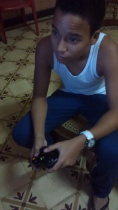
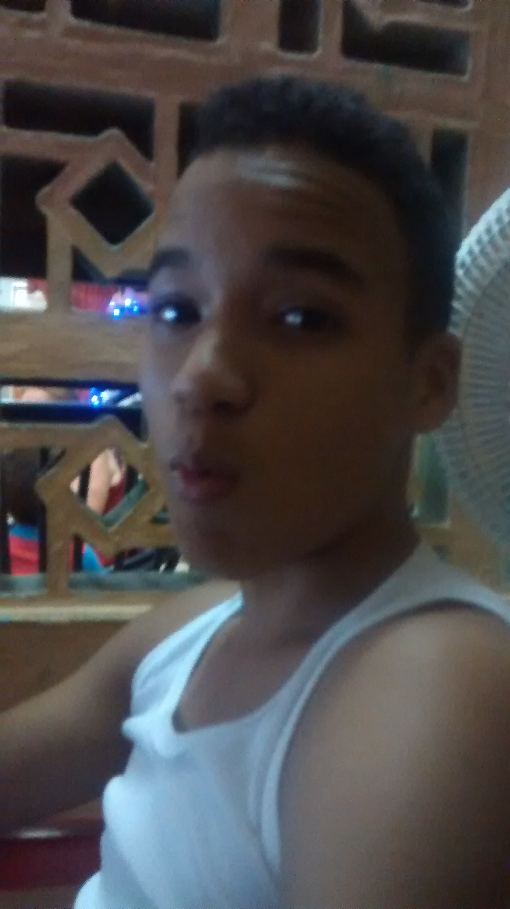
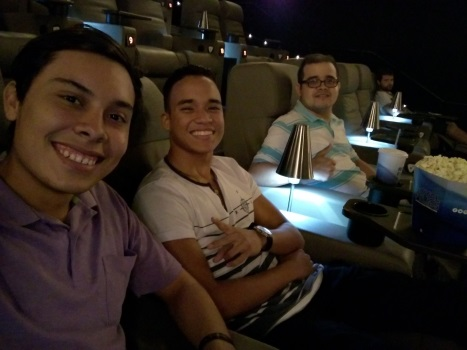
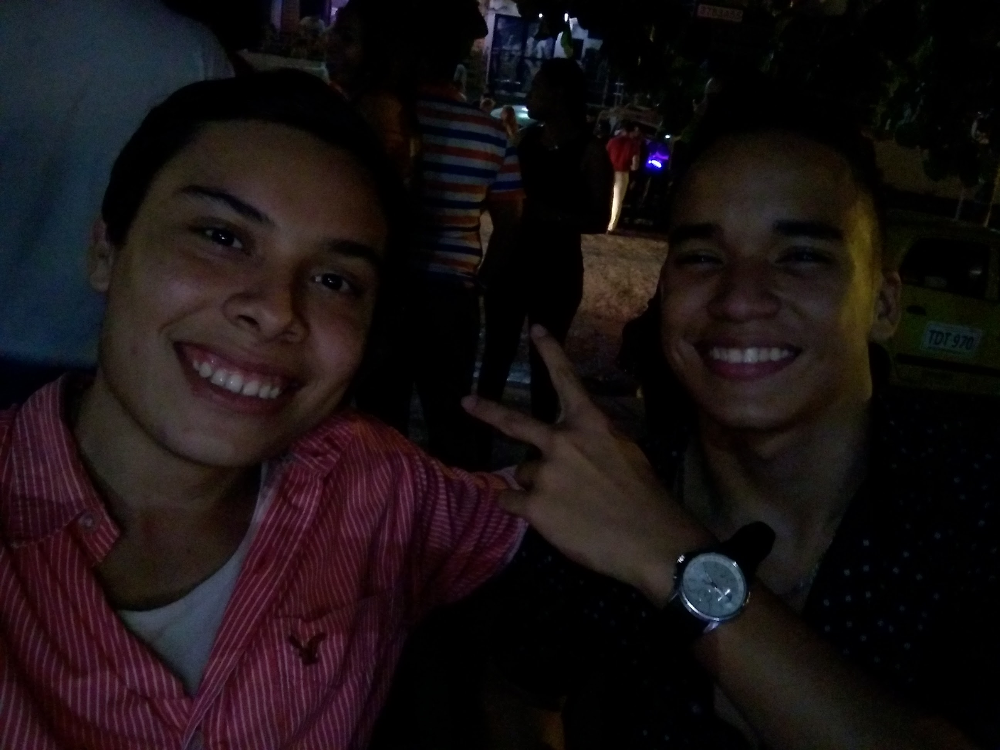
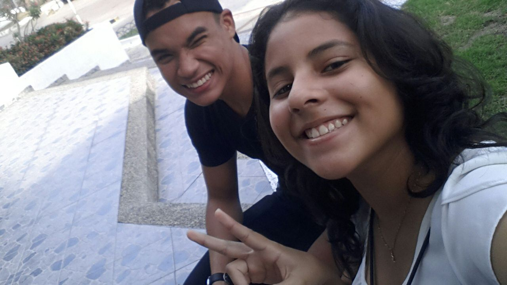
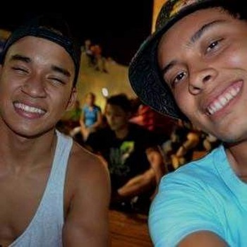
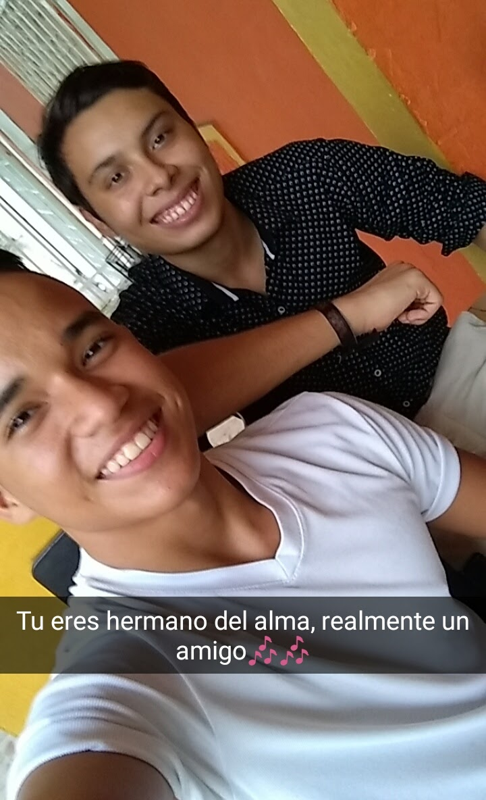

Al parecer la concidencia no existe, pero nuestra vida fueron lazos que nos unieron desde el principio.
tardes, despues de clases, tardes despues de luz y sombra y tardes despues de tanta tristesa para ti y para mi.
EL videojuego nos ayudo a ambos

Este fue nuestro comienzo...
 Xbox 365
Xbox 365
2013
Los lazos de los cuales hablo ¿literalmente fue el "xbox 365", esas tardes que jugamos tanto,
jamas nosotros fueramos pensado en esos tiempos que nuestra amistad seria un toque bastante cercano a hermanos.

Otras de tus fotos guardadas
 Xbox 365
Xbox 365
2013
Una de las cosas que mas me impacto fue el dia en que nos fuimos a cine con luis carlos, por que simplemente era una amistad que tu uniste a mi.

Una amistad que fue formada por ambos
 Luis Carlos
Luis Carlos
2016
Recuerdos unicos, esa amistad que ya tanto te hable. terminamos yendo a una discoteca, ¿genial no?.
Tu primera discote sino estoy mal.

Como olvidar este momento, tu primera ida a disco
 La 84 papa
La 84 papa
2016
Estas dos bellesas, son las amistades en las que mas puedo confiar. simplemente gracias por pertenecer ahi.

Amistades que para mi valen mucho, tu y ella
 Andrea Sierra
Andrea Sierra
2017
Las amistades son como las montañas, tenemos subidas y bajadas. aunque no muchas veces se puede subir despues de un bajon, contigo si se puede gabriel

Nuestros encuentros para fortalecer nuestra amistad, mamadera e' gallo
 Carnavalada
Carnavalada
2017
Al parecer son todos estos nuestros recuerdos, mentira!!. se que faltaron muchos, pero simplemente es un detalle que te mereces, con todo el amor de la amistad, este no puede ser nuestro fin. Ya no nos vemos mucho, pero eso no impide que nuestra amistad continue.

Todo por lo que hemos pasado, tu me has acompañado en mis 18 años tambien
 Mi cumpleaño
Mi cumpleaño
2017